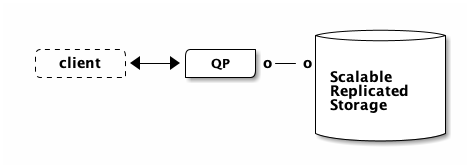
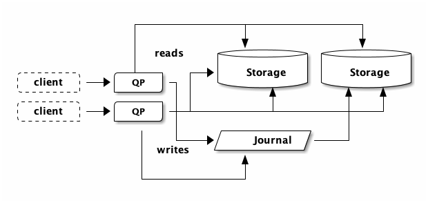

Aurora DSQL: Pushdown Compute Engine
In the DSQL architecture, the PostgreSQL-based query processor (QP) does not run on the same physical machine as the storage engine. Disaggregated storage is not a new concept for relational databases. Aurora PostgreSQL looks like this:

In Aurora PostgreSQL (or Aurora MySQL), commits are made durable by the remote storage system, which replicates data across three Availability Zones. This design has several advantages. The biggest advantage is that if the QP crashes, no data is lost, because committed data has been synchronously replicated off-host. This means you can bring another node online, which will attach to the storage layer and therefore have all the data.
This design also makes caching easy. The leader QP is the only node that can change data. Therefore, the QP can locally manage a cache and avoid going to storage when looking up data it has in the cache.
Why does this matter? Reading from memory is way faster than reading from the network (Latency Numbers Every Programmer Should Know is dated, but the intra-AZ value is still roughly correct). In SQL, it is common to read many values as part of a single query, so you really don’t want to be going over the network too often.
Read replicas can also attach to the storage layer. These replicas also have a cache (for the same reason: latency). Therefore, these replicas are eventually consistent since they can never know for sure if their local cache is up to date or not. In order to keep data as fresh as possible, there are broadcast mechanisms between components to keep data as fresh as possible.
If you want to learn more about this architecture, I highly recommend watching AWS re:Invent 2024 - Deep dive into Amazon Aurora and its innovations (DAT405).
Active-active
DSQL does things a little differently. In my article the Circle of Life, we talk about how DSQL’s design can scale both the QP and storage layers without any explicit leaders, and without introducing eventual consistency. So, something like this:

In the picture above, each client is able to do reads and writes, despite being connected to a different QP. We’ve also scaled storage out, without introducing eventual consistency. This architecture enables active-active use-cases. DSQL clusters are always active-active across Availability Zones (within an AWS Region). Multiple clusters can be peered together to provide active-active across AWS Regions (and Availability Zones).
There are other benefits to this design choice. If a QP (or storage node, etc.) fails, only a tiny fraction of your traffic is impacted (a single connection), and there is no need to wait for a replacement instance to be booted up. Simply reconnect (which most libraries or frameworks will do for you), and carry on.
But there’s a wrinkle too: we’ve lost the ability to maintain a write-through cache in the QP because any other QP can modify the data at any time. Each QP could subscribe to the journal to invalidate its local cache, but at least for now, that’s not how DSQL works.
Bytes per second
The QP and storage boxes are about 0.5ms RTT apart, but that’s not the only challenge. They’re also bandwidth constrained. Networks are pretty fast, but there is still finite bandwidth. At 1000Mbps, loading 100MB takes 1 second.
Therefore, any solution that can reduce the number of roundtrips between the QP and storage or the time taken to return data to the QP is going to have a big impact on query performance.
For the rest of this article, we’re going to talk about that second piece: reducing the time taken to return data. Both matter, and I’ll write more about the roundtrips in the future.
Fewer bytes, less time
The Pushdown Compute Engine (PCE) is a component that runs on storage. Its job is to reduce the number of bytes going back to the QP. If we send fewer bytes back, then at any given throughput (bytes per second), we’ll spend less time.
Let’s make a table:
create table users ( id int primary key, age int, name text )
This table has a single index (on primary key). Let’s insert some rows:
insert into users select *, random() * 50, md5(random()::text) from generate_series(1, 1000)
Now, let’s see what happens when fetch all the users:
explain analyze select * from users
QUERY PLAN ---------------------------------------------------------------------------------------------------------------------------------- Index Only Scan using users_pkey on users (cost=225.03..243.03 rows=1000 width=39) (actual time=1.590..9.692 rows=1000 loops=1) -> Storage Scan on users_pkey (cost=225.03..243.03 rows=1000 width=39) (actual rows=1000 loops=1) Projections: id, age, name -> B-Tree Scan on users_pkey (cost=225.03..243.03 rows=1000 width=39) (actual rows=1000 loops=1) Planning Time: 0.664 ms Execution Time: 9.754 ms
This query plan is telling us we’re scanning the primary key index which
contains 1000 rows, and we’re asking for the (id, age, name) tuple (which so
happens to be all the fields). This is the first feature PCE has: projections.
Instead of fetching everything, we can just fetch the id:
explain analyze select id from users; QUERY PLAN --------------------------------------------------------------------------------------------------------------------------------- Index Only Scan using users_pkey on users (cost=225.03..243.03 rows=1000 width=4) (actual time=1.548..8.531 rows=1000 loops=1) -> Storage Scan on users_pkey (cost=225.03..243.03 rows=1000 width=4) (actual rows=1000 loops=1) Projections: id -> B-Tree Scan on users_pkey (cost=225.03..243.03 rows=1000 width=4) (actual rows=1000 loops=1) Planning Time: 0.038 ms Execution Time: 8.592 ms (6 rows)
This query plan now has Projections: id, which means that we’re going to
return fewer bytes over the wire. That saved us about 1ms. Not very scientific
with N=1, but you get the idea.
Let’s do a little math.
select pg_column_size(users.id) as id, pg_column_size(users.age) as age, pg_column_size(users.name) as name from users limit 1 id | age | name ----+-----+------ 4 | 4 | 36 (1 row)
So… fetching 1,000 rows will be 4,000 bytes if we only fetch the ids, or 44,000 bytes if we fetch all columns. That’s not exactly right, because there is some additional overhead, but it’ll do.
\begin{equation} delta\_bytes = 44000 - 4000 = 40000 \end{equation} \begin{equation} delta\_time = 9.7ms - 8.5ms = 1.2ms \end{equation} \begin{equation} bytes\_per\_second = \dfrac{40000}{0.0012} =~ 267 Mbps \end{equation}Not too bad. With 4 QPs, you can do 1 Gbps.
Filtering rows
PCE is also capable of pushing down filters to storage. Our test table only has an index on the primary key. What if we wanted to find a user by name?
explain analyze select * from users where name = 'a811e2411b325eb5730f907a0c53d73f' QUERY PLAN ------------------------------------------------------------------------------------------------------------------- Full Scan (btree-table) on users (cost=225.03..249.53 rows=1 width=39) (actual time=1.292..5.267 rows=1 loops=1) -> Storage Scan on users (cost=225.03..249.53 rows=1 width=39) (actual rows=1 loops=1) Projections: id, age, name Filters: (name = 'a811e2411b325eb5730f907a0c53d73f'::text) Rows Filtered: 999 -> B-Tree Scan on users (cost=225.03..249.53 rows=1000 width=39) (actual rows=1000 loops=1) Planning Time: 0.081 ms Execution Time: 5.299 ms (8 rows)
This query plan says it’s going to filter the result set at storage. Because
we used EXPLAIN ANALYZE and not just EXPLAIN, we see that 999 rows were
filtered out, and only 1 row was returned.
DSQL’s PCE engine currently only supports a subset of what PostgreSQL supports
in WHERE clauses. For example, this query adds a function that PCE doesn’t
yet support:
explain analyze
select * from users
where lower(name) = 'a811e2411b325eb5730f907a0c53d73f'
QUERY PLAN
-----------------------------------------------------------------------------------------------------------------------------
Index Only Scan using users_pkey on users (cost=225.03..243.03 rows=5 width=39) (actual time=1.556..9.804 rows=1 loops=1)
Filter: (lower(name) = 'a811e2411b325eb5730f907a0c53d73f'::text)
Rows Removed by Filter: 999
-> Storage Scan on users_pkey (cost=225.03..243.03 rows=1000 width=39) (actual rows=1000 loops=1)
Projections: id, age, name
-> B-Tree Scan on users_pkey (cost=225.03..243.03 rows=1000 width=39) (actual rows=1000 loops=1)
Planning Time: 0.066 ms
Execution Time: 9.836 ms
(8 rows)
What do you see? Two things. First, query time went up to about the same duration as it took to read all rows. Second, the “Rows Removed by Filter: 999” is no longer part of the “Storage Scan” node in the query plan. This means we sent 1000 rows back to the QP (which takes time), only to throw nearly all of them away.
Aggregations
PCE also capable of running aggregation functions such as count(), sum(),
min(), and max(). However, this functionality is currently not enabled. So,
if you run:
select count(*) from very_large_table
That’s not going to perform super well, as each row will go back to the QP. If you analyze that query, you’ll see that DSQL sends an empty projection back and not the entire row. This saves bytes/sec over the network, but it’s not as optimal as simply sending a single result back.
Supported data types
Find out for yourself with:
select name from sys.supported_datatypes() where supported_in_pushdown = true
I’m not going to include the list here, because I don’t want this article to become stale as we add additional type support.
Summary
In this post, we’ve looked at one of the techniques that DSQL uses to improve
query performance: returning fewer bytes over the network. The Pushdown Compute
Engine supports projections (SQL SELECT), filters (SQL WHERE), and
common aggregation functions (such as sum()). This allows DSQL to discard or
transform rows or columns close to the data.
PCE is not (yet) fully compatible with all the PostgreSQL data types and functions. For the DSQL release (just 3 months ago!), we implemented the most commonly used types and functions following the Pareto principle. Support is only going to improve over time. As always, we greatly appreciate any feedback on what queries matter to you.
Thanks for reading!